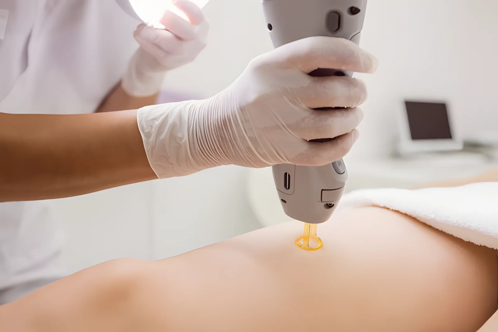

أطباء الجلدية في وافي. ديرما ميد كلينك عيادة جلدية في الطابق الأول من وافي مول، أسسها الدكتور أنور الحمادي. خمسة أطباء جلدية يعالجون حب الشباب والإكزيما والصدفية والشامات ومشاكل الشعر والأظافر، ويقدمون علاجات الليزر والتجميل.
مفتوح الآن من السبت إلى الخميس، 9 صباحًا حتى 8 مساءً
حب الشباب الإكزيما الصدفية الشامات وسرطان الجلد تساقط الشعر مشاكل الأظافر التصبغات فرط التعرق التهابات الجلد
خمسة أطباء جلدية، تدرّبوا في ثماني دول.
كندا الولايات المتحدة المملكة المتحدة السويد بلجيكا فرنسا الهند الإمارات
كل طبيب في العيادة اختصاصي جلدية، حاصل على البورد من أمريكا الشمالية أو أوروبا. اطلب الطبيب الذي تريده بالاسم عند الحجز.
د. أنور الحمادي Dr. Anwar Al Hammadi
المؤسس · استشاري الأمراض الجلدية
البورد الأمريكي للأمراض الجلدية، وزمالة الكلية الملكية للأطباء في كندا (جامعة ماكغيل)، وزمالة جراحة الجلد من مستشفى ماونت سايناي في نيويورك. رئيس جمعية الإمارات للأمراض الجلدية منذ 2015، وله أكثر من 35 بحثًا منشورًا.
حب الشباب، الإكزيما، الصدفية، سرطان الجلد، خرائط الشامات →
د. خديجة الجفري Dr. Khadija Aljefri
المدير الطبي · استشارية جلدية
تدرّبت في المملكة المتحدة وعملت استشارية في مستشفيات لندن. اهتمام خاص بجلد الأطفال.
المزيد →
د. جواهر النقبي Dr. Jawaher Alnaqbi
استشارية جلدية
خريجة جامعة الإمارات، ثم البورد السويدي في مستشفى سالغرينسكا الجامعي في غوتنبرغ.
المزيد →
د. نيشا بارمار Dr. Nisha V Parmar
أخصائية جلدية
البورد الأوروبي. تدرّبت على أمراض الأظافر وجراحتها في بروكسل، ولها أكثر من 30 بحثًا.
المزيد →
د. لارا الحيدري Dr. Lara El Hayderi
أخصائية جلدية
البورد الأوروبي والبلجيكي، ودكتوراه من جامعة لييج. زمالات فرنسية في جراحة الجلد والتجميل.
المزيد →
عيادتان متخصصتان داخل العيادة.
إلى جانب الأمراض الجلدية العامة، تدير ديرما ميد عيادتين خاصتين، يقود كل واحدة منهما الأطباء الذين تخصصوا فيها.
عيادة سرطان الجلد
فحص الشامات ورسم خرائطها، وفحص أي بقعة تقلقك، وجراحة سرطان الجلد.
د. أنور الحمادي · د. لارا الحيدري
عيادة جلدية الأطفال
الإكزيما وغيرها من مشاكل الجلد عند الأطفال، مع طبيبة متخصصة في جلد الأطفال.
د. خديجة الجفري، عضو الجمعية البريطانية لأمراض جلد الأطفال
العلاجات
العلاج الطبي للجلد أولًا، ثم الليزر والعناية بالبشرة والتقشير والحقن، وكلها في العيادة بوافي.
01 الأمراض الجلديةحب الشباب، الإكزيما، الصدفية، الالتهابات، التصبغات، الشعر والأظافر حب الشباب وآثاره الإكزيما والصدفية فرط التعرق التهابات الجلد والثآليل الأمراض الجلدية الوراثية تساقط الشعر ومشاكل الأظافر تصبغات الجلد فحص الشامات وسرطان الجلد كل العلاجات الطبية →
02 الليزرإزالة الشعر، تجديد البشرة، التصبغات وإزالة الوشم إزالة الشعر بالليزر، بأجهزة تناسب مختلف أنواع البشرة وسماكة الشعر تجديد البشرة بالليزر ليزر التصبغات إزالة الوشم 
عن الليزر →
03 العناية بالبشرةهيدرافيشل وفيشل مضادات الأكسدة، مع أخصائية التجميل هيدرافيشل HydraFacial فيشل بمضادات الأكسدة وحمض الهيالورونيك عن العناية بالبشرة →
04 التقشير الكيميائيحسب نوع بشرتك والحالة التي نعالجها تقشير بحمض الجليكوليك تقشير TCA تقشير سطحي ومتوسط عن التقشير →
05 البوتوكس والفيلرخطوط الجبهة، تجاعيد العين، فرط التعرق وتجاعيد الوجه بوتوكس لخطوط الجبهة وتجاعيد حول العين بوتوكس لعلاج فرط التعرق فيلر بحمض الهيالورونيك لتجاعيد الوجه عن البوتوكس والفيلر →
غرفة علاج في ديرما ميد، وافي سيتي الطابق الأول، وافي مول
كيف تحجز موعدك
أسرع طريقة للحجز هي واتساب. اكتب لنا سبب الزيارة والطبيب الذي تفضّله، ونرد عليك بموعد.
راسلنا أو اتصل بنا واتساب أو اتصال على 04 385 2222 ، من السبت إلى الخميس، 9 صباحًا حتى 8 مساءً. اطلب الطبيب بالاسم إن كان لديك طبيب معيّن.
عربون 25% لتثبيت الموعد عند الحجز نأخذ 25% من قيمة العلاج مقدمًا، وتُخصم من فاتورتك النهائية يوم العلاج.
تريد تغيير الموعد؟ أبلغنا قبل أسبوع على الأقل، ونعيد العربون إلى البطاقة أو وسيلة الدفع التي استخدمتها.
بياناتك تبقى عندنا لا نخزّن بيانات البطاقات ولا نبيع أو نشارك معلوماتك الشخصية مع أي جهة.
موقعنا في وافي
مفتوح الآن وافي سيتي، الطابق الأول، مقابل صيدلية بوتس، وافي مول
شارع الرازي، عود ميثاء، بجانب مدينة دبي الطبية. أقرب محطة مترو: محطة مدينة دبي الطبية.
السبت 9:00 – 20:00 الأحد 9:00 – 20:00 الاثنين 9:00 – 20:00 الثلاثاء 9:00 – 20:00 الأربعاء 9:00 – 20:00 الخميس 9:00 – 20:00 الجمعة مغلق
وافي مول
الطابق الأول، مقابل صيدلية بوتس
بالقرب من محطة مترو مدينة دبي الطبية
اعرض الخريطة →